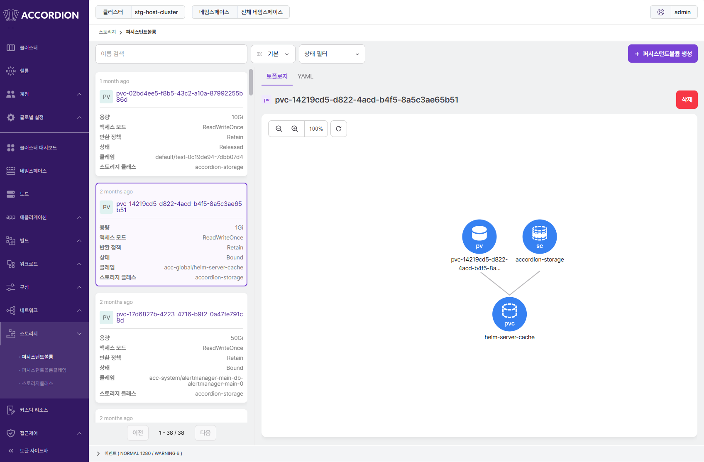
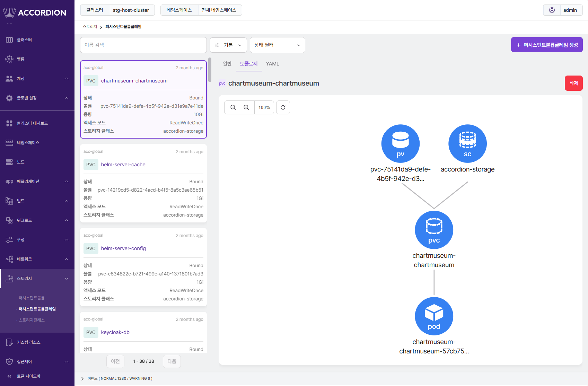

스토리지
컨테이너 환경에서 디스크는 일반 환경과 다른 특성을 가지고 있다. 컨테이너 내부에서 저장한 파일은 임시적인 것으로 컨테이너가 삭제되면 저장한 컨텐츠도 함께 삭제되며 파드의 집합으로 운영되는 경우를 고려하여 데이터의 공유에 대해서도 검토가 필요하다. 스토리지 리소스들을 이용해 이런 문제들을 해결할 수 있다. 스토리지 리소스들은 컨테이너가 삭제되더라도 데이터를 보존하고 파드의 집합에서 데이터를 공유하는 방법을 제공한다.
퍼시스턴트볼륨
퍼시스턴트볼륨은 프로비저닝하거나 스토리지 클래스를 사용하여 동적으로 프로비저닝한 클러스터의 스토리지이다.
토폴로지
퍼시스턴트볼륨과 관련된 리소스를 토폴로지 형태로 보여준다.
기본 기능은 파드와 내용이 동일하기 때문에 파드 토폴로지를 참고한다.
퍼시스턴트볼륨의 토폴로지에서 출력되는 리소스는 다음과 같다.
- 퍼시스턴트볼륨, 스토리지클래스 - 퍼시스턴트볼륨클레임



퍼시스턴트볼륨클레임
퍼시스턴트볼륨클레임은 사용자 스토리지에 대한 요청이다. 퍼시스턴트볼륨클레임은 퍼시스턴트볼륨 리소스를 사용하며 특정 크기 및 접근 모드를 요청할 수 있다.
토폴로지
퍼시스턴트볼륨클레임과 관련된 리소스를 토폴로지 형태로 보여준다.
기본 기능은 파드와 내용이 동일하기 때문에 파드 토폴로지를 참고한다.
퍼시스턴트볼륨클레임의 토폴로지에서 출력되는 리소스는 다음과 같다.
- 퍼시스턴트볼륨, 스토리지클래스 - 퍼시스턴트볼륨클레임 - 파드
